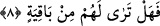

8. Şimdi onlardan arda kalan bir şey görüyor musun?
Buradaki soru, istifhâm-ı inkârî’dir. Yâni soru şeklinde gelmiş ama mânâsı;
“görmüyorsun” biçimindedir. Âyette yer alan “bâkıye”, bakıyye kelimesi gibi isim olup
vasıf değildir. Sonundaki “ta” harfi, kelimeyi isme çevirmek içindir. Buradaki “min”
harf-i cerri zâidedir. “Bâkıye” kelimesi “görüyorsun” anlamına gelen “terâ” fiilinin
mef’ûlüdür. Buna göre âyetin mânâsı şöyledir: “Sen onlardan geriye kalan hiç bir şey
görüyor değilsin. Küçük-büyük, erkek-dişi onlardan mü’min olmayan, inanmayan hiç
kimseyi göremezsin.” “Bâkıye” kelimesinin mahzuf bir mevsûfun sıfatı olarak
düşünülmesi de mümkündür. Bu gizli mevsuf “nefis” kelimesidir. Buna göre âyetin
mânâsı; “Nefislerden arda kalan bir şey görüyor musun?” şeklinde olacaktır. “Bâkıye”
kelimesini, “bakâ” anlamında masdar olarak almak da mümkündür. Tıpkı “kâzibe” ve
“tâğiye” kelimelerinin masdar olarak alınmalarının mümkün olması gibi. “Bakâ”
herhangi bir şeyin ilk hâli üzere sâbit olması, öylece devam etmesi demektir. Zıddı
“fenâ” kelimesidir.
Muhakkak zaman içinde şahlara lâyık nişânlarıyla
Tahta kurulan pek çok padişah geldi
Kahr-ı İlâhî tarafından kazâ rüzgârı esince
Hepsi toprak oldular, hattâ o topraktan dahi eser kalmadı.
Aklı başında olan kişiye gereken, çalışıp çaba göstermektir; tâ ki dünyada ikinci bir
ömürle adı bâki kalsın. Nitekim Allah Teâlâ, dostu İbrahim (a.s.)’ın sözünü bizlere
aktarırken buna şöyle işâret eder: “Bana sonra gelecekler içinde, iyilikle anılmak
nasip eyle.” (eş-Şuara, 26/84) Üstelik gerçek ve bâki olan bir hayat, ancak ilâhi tecellî
ve âkıbete dönük küllî feyiz ile elde edilebilir.
Bizler Allah’tan isimlerinin, sıfatlarının ve vücûb-i vücûdu hürmetine üzerimize
feyzini ve bereketini bol bol akıtmasını dileriz.
[64]. Müslim, Sahih, II, 617; Buhari, Sahih, V, 109.